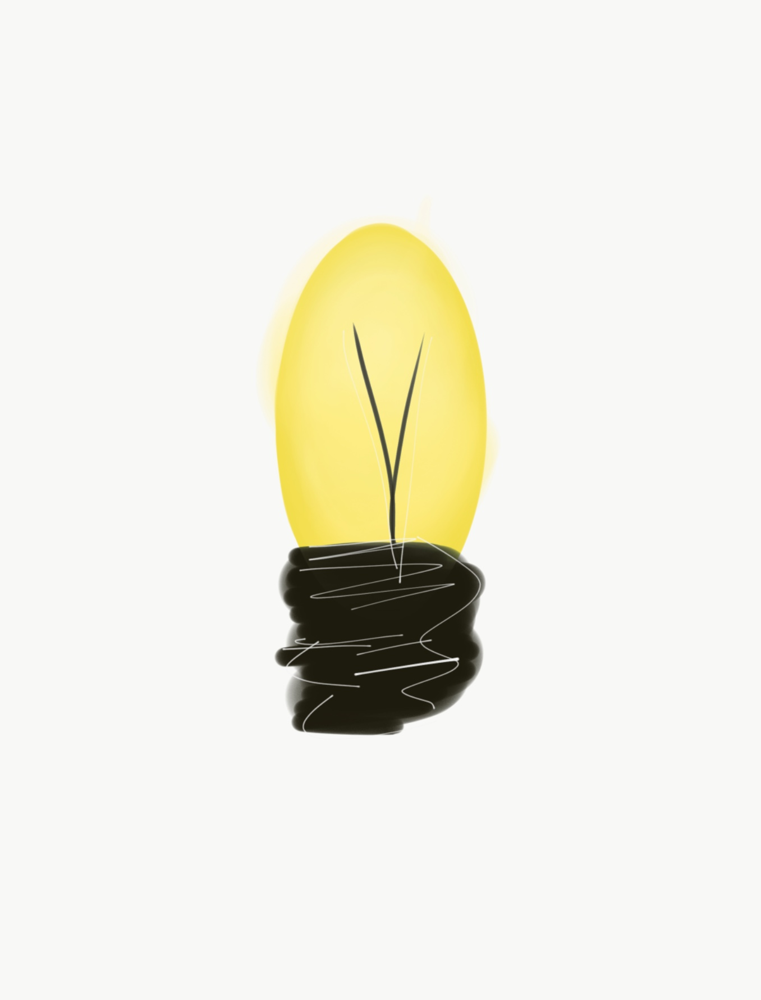

Based on your daily survey, you were feeling HAPPY today
Here are your recommendations:

1. STAY OPTIMISTIC: Life is all about finding the good things and sticking to them. Who knows what the future holds, but it's important to go into it feeling happy and refreshed.
2. GOOD COMPANY: Surround yourself wih positive and REAL friends. The people you surround yourself with are key in having a great support system. Stick to people who make you a better YOU!

Sit up straight and slowly extend your arms up while inhaling. Wait 3 seconds and then bring your arms back down into loose fists while simultanouesly exhaling. Repeat this about 5-10 times.

Dark chocolate, bananas, berries, and quinoa are foods proven to help release seratonin and keep you refreshed/happy!
Here's a resource you can use for more information: https://www.lifehack.org/articles/communication/10-scientifically-proven-ways-stay-happy-all-the-time.html